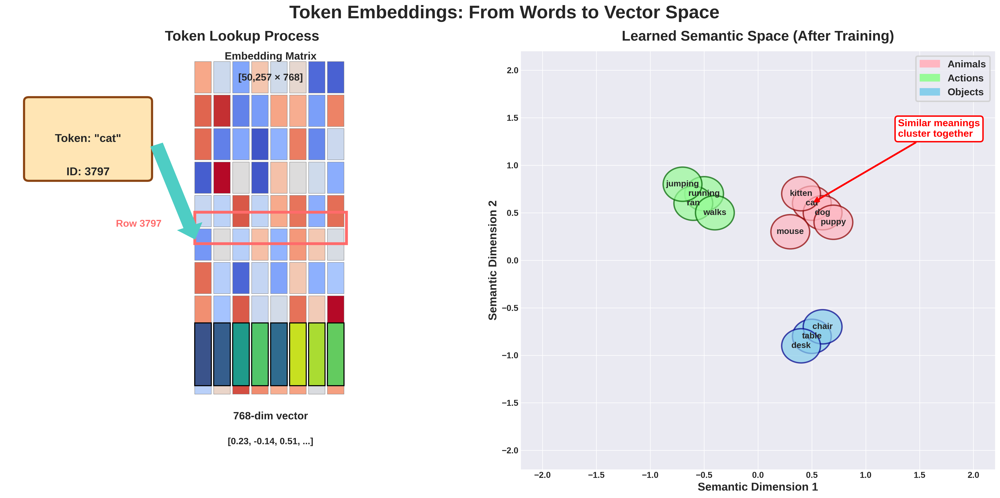

Understanding LLM Parameters: A Step-by-Step Calculation Guide Using GPT-2
Introduction
Ever wondered where the “117M” in GPT-2 small or “1.5B” in GPT-2 XL comes from? In this post, we’ll break down exactly how to calculate the total number of parameters in a GPT-2 model from scratch. We’ll trace every single parameter from the input token all the way to the output prediction.
But here’s what makes this interesting: each of these millions of parameters starts as a random number. When we create a GPT-2 model from scratch, we’re essentially creating millions of random values that will gradually learn to understand and generate human language through training. Think of it as sculpting intelligence from random noise.
Why Parameters Matter
Before diving into calculations, let’s understand what these parameters actually do:
- Parameters are the model’s memory - They store everything the model knows about language
- Each parameter is a decimal number - Initially random (like 0.0234 or -0.1823)
- Training adjusts these numbers - Billions of text examples gradually tune each parameter
- More parameters = more capacity - Like having more neurons in a brain
To make this crystal clear, we’ll use concrete numbers and track parameters through three distinct stages:
- Input Processing (Token Embedding + Position Encoding) - Where words become numbers
- Transformer Blocks (Multi-Head Attention) - Where understanding happens
- Output Generation (Feed-Forward Networks + Final Projection) - Where predictions emerge
Model Configuration
Let’s start with GPT-2 small (117M) configuration:
| Parameter | Value |
|---|---|
| Vocabulary size (V) | 50,257 |
| Model dimension (d_model) | 768 |
| Number of layers | 12 |
| Number of attention heads | 12 |
| Feed-forward dimension | 3,072 |
| Max sequence length | 1,024 |
Part 1: Input Processing
Before any learning happens, we need to convert text into numbers that neural networks can process. This is where embedding matrices come in - they’re like dictionaries that translate words into numerical representations.
1.1 Token Embedding Matrix: The Model’s Vocabulary
When a token enters the model, it’s converted to a dense vector representation. Think of this as the model’s learned dictionary.
What’s really happening here:
- Each of the 50,257 tokens gets its own 768-dimensional vector
- Initially, these vectors are randomly initialized (values between -0.02 and 0.02)
- During training, similar words gradually develop similar vectors
- Words like “cat” and “kitten” end up with vectors pointing in similar directions

Matrix Shape: [V × d_model] = [50,257 × 768] Parameters: 50,257 × 768 = 38,597,376
Training Evolution: These 38.6 million parameters start random but gradually organize into a meaningful semantic space where related concepts cluster together.
1.2 Position Embedding Matrix: Teaching Word Order
Each position in the sequence gets its own learned embedding. This is crucial because transformers, unlike RNNs, don’t inherently understand sequence order.
Why position matters:
- Without position embeddings, “The cat ate the mouse” = “The mouse ate the cat”
- Position 0 learns about sentence starters (capitals, common opening words)
- Later positions learn about sentence endings (punctuation patterns)
Matrix Shape: [max_seq_length × d_model] = [1,024 × 768] Parameters: 1,024 × 768 = 786,432
Total for Part 1
- Token Embeddings: 38,597,376
- Position Embeddings: 786,432
- Subtotal: 39,383,808 parameters
Part 2: Transformer Blocks (Multi-Head Attention)
This is where the magic happens. Each transformer block learns to understand relationships between words, build up meaning, and extract patterns. Think of each layer as adding a deeper level of understanding - early layers might learn grammar, while later layers learn semantics and reasoning.
2.1 Multi-Head Attention Block: The Heart of Understanding
The attention mechanism is what allows GPT-2 to understand context and relationships between words. It’s called “attention” because it learns which words to “pay attention to” when understanding each word.

Query, Key, Value Projections: The Attention Trinity
Think of attention like a library search system:
- Query (Q): “What am I looking for?” - Each word asks questions
- Key (K): “What can I offer?” - Each word advertises what it contains
- Value (V): “Here’s my actual information” - The content to be retrieved
For each projection (Q, K, V):
- Weight matrix:
[768 × 768] = 589,824 - Bias vector:
[768]
Per projection: 589,824 + 768 = 590,592 For all three (Q, K, V): 590,592 × 3 = 1,771,776
During Training: These matrices learn to extract different types of relationships - some heads learn syntax, others semantics, some long-range dependencies, others local patterns.
Output Projection
After concatenating all attention heads, we project back to d_model dimension. This learned projection decides how to best combine the different patterns each head discovered.
Output projection total: 590,592
Layer Normalization
Layer normalization prevents values from exploding or vanishing during training. Without it, deep networks become impossible to train.
LayerNorm parameters: 1,536
Part 3: Feed-Forward Network and Output Generation
After attention figures out “what to look at,” the feed-forward network processes this information, acting like the “thinking” step that happens after gathering context.
3.1 Feed-Forward Network: The “Thinking” Layer
While attention gathers information, the FFN processes it. Think of it as the model’s “reasoning engine” that transforms the gathered context into higher-level understanding.
First Linear Layer: Expansion for Processing Power
The network expands from 768 to 3,072 dimensions - giving it more “room to think.” This 4x expansion is crucial for learning complex patterns.
First layer total: 2,362,368 parameters
During Training: These 2.36M parameters learn to detect complex patterns - combinations of features that represent higher-level concepts.
Second Linear Layer: Distilling Understanding
Projects back from the expanded space to the model dimension, distilling the processed information while preserving the most important insights.
Second layer total: 2,360,064 parameters
Building Understanding Layer by Layer
Each layer adds depth to the model’s understanding:
- Layers 1-3: Often learn basic syntax and grammar
- Layers 4-6: Typically capture phrase-level patterns and simple semantics
- Layers 7-9: Usually understand sentence structure and dependencies
- Layers 10-12: Generally handle abstract reasoning and long-range relationships
All 12 Transformer Layers: 7,087,872 × 12 = 85,054,464 parameters
Final Parameter Count
| Component | Parameters |
|---|---|
| Token Embeddings | 38,597,376 |
| Position Embeddings | 786,432 |
| Transformer Blocks (×12) | 85,054,464 |
| Final LayerNorm | 1,536 |
| Total | 124,439,808 |

Practical Insights
How Parameters Evolve During Training
- Initialization (Before Training):
- All 124M parameters start as small random numbers
- The model outputs complete gibberish
- Early Training (First few thousand steps):
- Model learns basic patterns: common words, simple grammar
- Attention heads start specializing
- Mid Training (Millions of tokens):
- Complex patterns emerge: subject-verb agreement, pronouns
- Different layers develop distinct roles
- Late Training (Billions of tokens):
- Fine-grained understanding: idioms, context, style
- Model can generate fluent, contextual text
Memory Requirements
Each parameter needs storage:
- Float32: ~124M × 4 bytes = ~496 MB (Full precision)
- Float16: ~124M × 2 bytes = ~248 MB (Half precision)
- Training requires ~10-15 GB total (including gradients, optimizer states)
Scaling Laws
| Model | Parameters | Performance |
|---|---|---|
| GPT-2 Small | 117M | Good |
| GPT-2 Medium | 345M | Better |
| GPT-2 Large | 762M | Even Better |
| GPT-2 XL | 1.5B | Best |
Why Bigger Models Work Better:
- More parameters = More patterns to learn
- Deeper layers = More abstraction levels
- Wider layers = Richer representations
Conclusion: From Random Numbers to Language Understanding
We’ve traced every single parameter in GPT-2, from the 38.6M embedding parameters to the 85M transformer parameters. But here’s the remarkable part: all 124 million parameters start as random numbers. Through training on billions of tokens of text, these random values self-organize into a system that understands and generates human language.
Understanding parameter calculation helps us:
- Estimate memory requirements
- Design efficient architectures
- Understand computational costs
- Make informed scaling decisions
Every parameter serves a specific purpose in transforming input tokens into predicted output distributions.
The Beautiful Symmetry: Notice how the same embedding matrix that encodes input tokens also decodes output predictions. The attention mechanisms that understand relationships also help generate coherent text. The model is both a reader and a writer, using the same parameters for both tasks.
Next Steps
Try calculating parameters for:
- BERT (encoder-only, different architecture)
- GPT-3 (175B parameters - where do they all go?)
- Modern models like Llama or Mistral (architectural innovations)
Remember: The power of these models comes not just from parameter count, but from how these parameters are organized and trained. Architecture matters as much as scale!